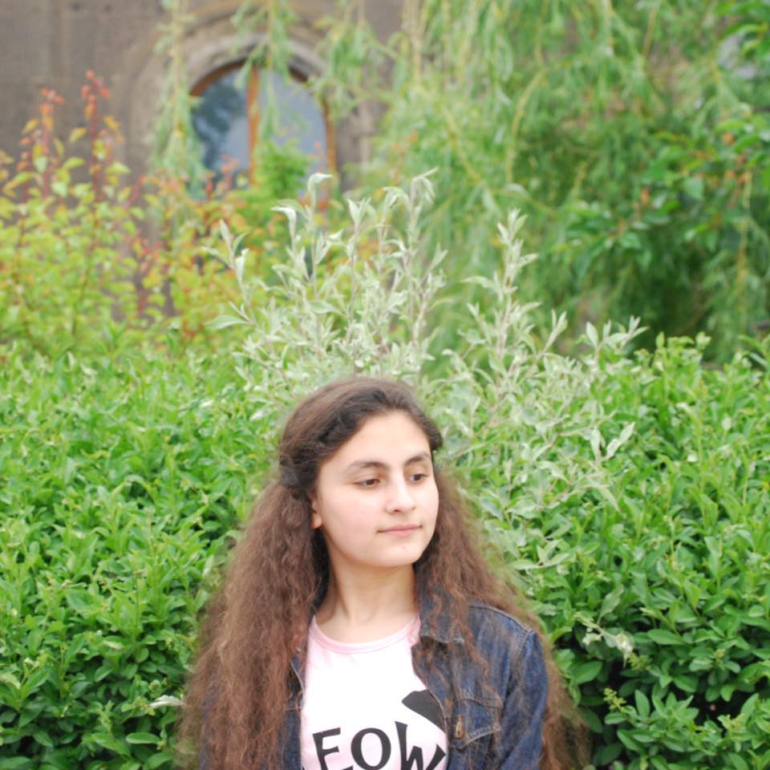

Հեղինե Սարկիսյան
Գյումրի, Սպարտակի փողոց I-ին նրբ․
տուն 3/1, փոստայինինդեքս
094449025, 077735154
heghine.sarkisyan.im@gmail.com
ՀՄՏՈՒԹՅՈՒՆՆԵՐ
- Նվագում եմ կիթառ
- Պարում եմ ազգագրական պարեր
- Տիրապետում եմ դասական
հայերենի ուղղագրրությանը - Տիրապետում եմ Adobe Effect եւ
Adobe Premiere Pro ծրագրերին - Ունեմ դասավանդման փորձ
- Տիրապետում եմ C++, python, bash
ծրագրավորման լեզուներին։
Գիտեմ նաեւ algorithms, graph, Linux,
vim, git եւ network
ԼԵԶՈՒՆԵՐ
- Անգլերեն ★ ★ ★ ☆ ☆
- Ռուսերեն ★ ★ ★ ☆ ☆
- Հայերեն ★ ★ ★ ★ ★
- Ադրբեջաներեն ★ ★ ☆ ☆ ☆
ԸՆԴՀԱՆՈՒՐ ՏԵՂԵԿՈՒԹՅՈՒՆ
Հեղինե Լեւոնի Սրկիսյան, ծնվ․ 2004թ մայիսի 24-ին։ Հրայրք
ազգագրական խմբի եւ Մարտական պատրաստության ճամբարի
անդամ։ Երիտասարդ Կովկասագետներ Նախաձեռնության անդամ։
ԱՇԽԱՏԱՆՔԱՅԻՆ ՓՈՐՁ (Կամավոր/ուսնակություն)
- YIC (Youth Initiative Center) ՀԿ ֊ի կամավոր 2018թ․ - 2020թ․
- ՄԵՄ(Մարզերի Երեխաները Մարզերում) ՀԿ կամավոր
20.05.21թ․ - մինրեւ հիմա - «Ճանաչիր թշնամուդ» սոցիալական նախագծի հիմնադիր
01.08.21թ․ ֊ մինչեւ հիամ - ՄԵՄ ֊ի արտաքին բաժնի անդամ։ Սփյուռքի հետ
համագործակցության բաժնի ղեկավար (կամավոր) ֊
01.10.21թ․ ֊ մինչեւ հիմա - SMM «Koriz» marketing ընկերության ուսնակ - 01.11.21թ․ -
01.02.22թ․ - «Մեկ ձայն» անկախ դպրոցների հայկական ասոցիացիա
կամավոր 11.02.22թ․ ֊ մինչեւ հիմա
ԿՐԹՈՒԹՅՈՒՆ
- Գյումրու թիվ 32 հիմնական դպրոց ֊ 01.09.2010 -24.05.2019
- Թումո Գյումրի - 2017 - 2020
- Գյումրու թիվ 3-րդ երաժշտական դպրոց՝ Կիթառի բաժին -
2018 - մինչեւ հիմա - Իրական դպոց կրթամշակութային հիմնադրամ՝ Գյումրու
մասնաճյուղ ֊ 01.09․2019 - մինչեւ հիմա - Առաջնորդության դպրոց ֊ 2020թ․ ամառ ֊ 2020թ
- «Երիտասարդների քաղաք/Youth city» Erasmus + ծրագրի
մասնակից - 2020թ․ մարտ ֊ 17.08.2021թ․ ։ - Երիտասարդ Կովկասագետներ Նախաձեռնություն՝
Ադրբեջաներեն 3-ամսյա դասընթաց - 15.02.2021թ․ -
15.05.2021 - Ինստիգեյթ Կիսահաղորդիչներ - 2021թ․ մարտ - 2021թ․ մայիս
- Business Development Group ֊ SMM դասընթաց - 2021թ․
սեպտեմբեր - 2021թ․ նոյեմբեր - Ինստիգեյթ Մոբայլ 6 -ամսյա ծրագրավորման դասընթաց ֊
2021թ․ նոյեմբեր ֊ մինչեւ հիմա